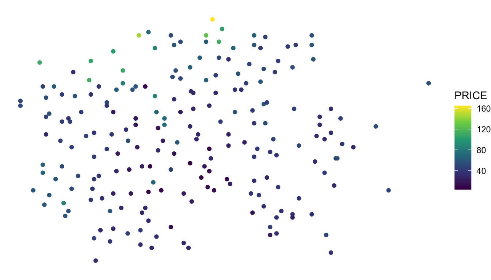
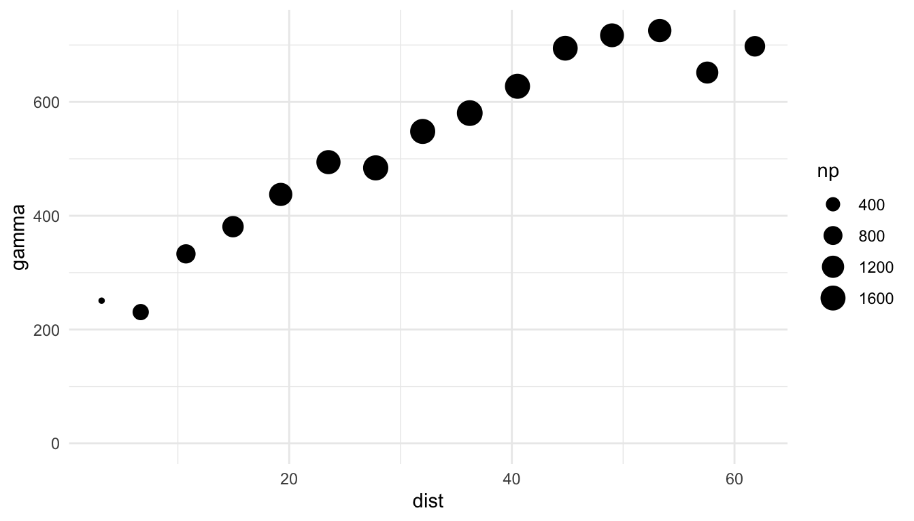
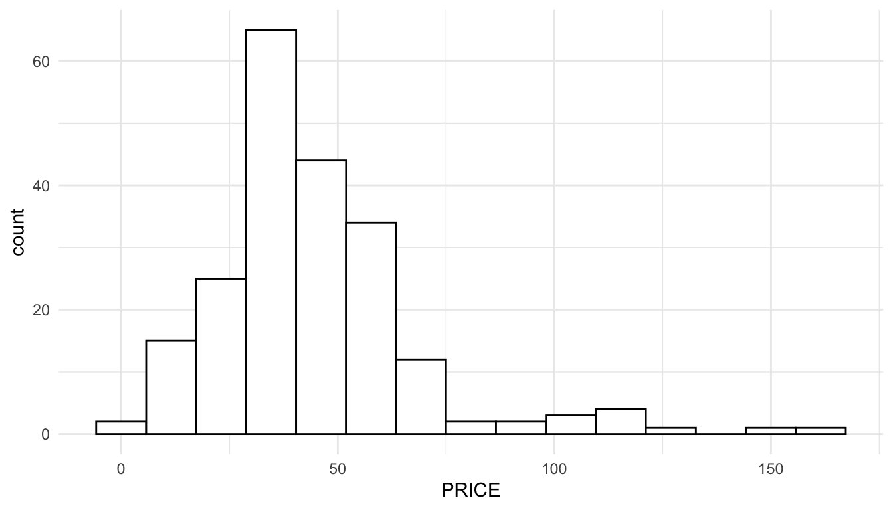
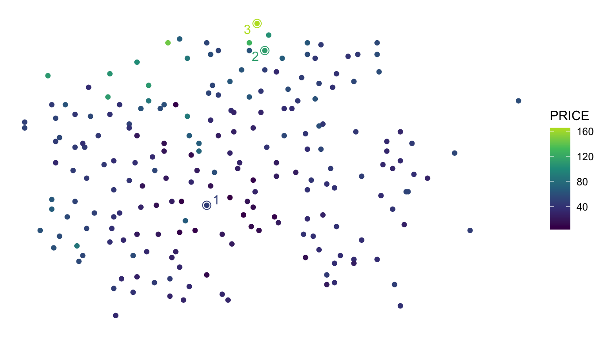
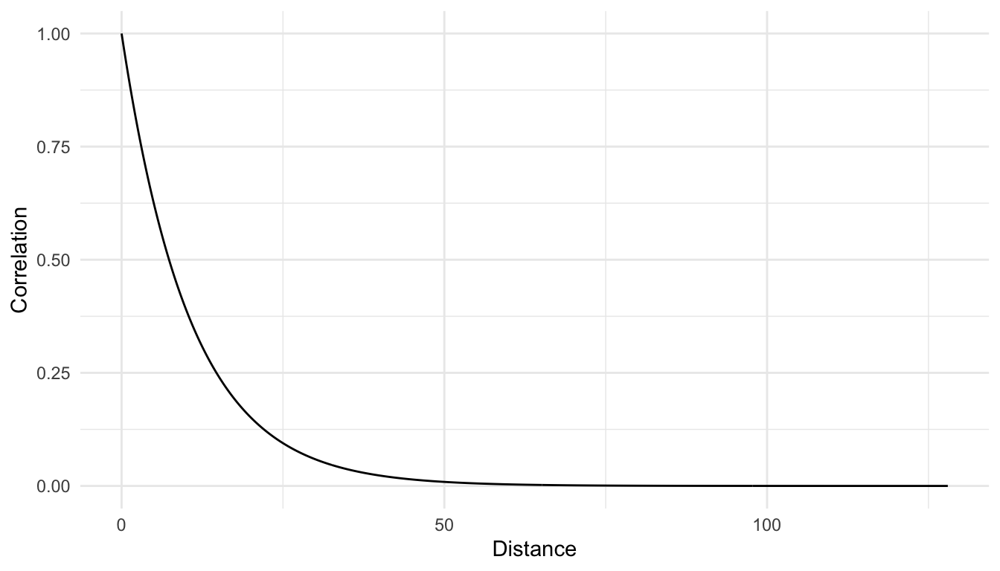
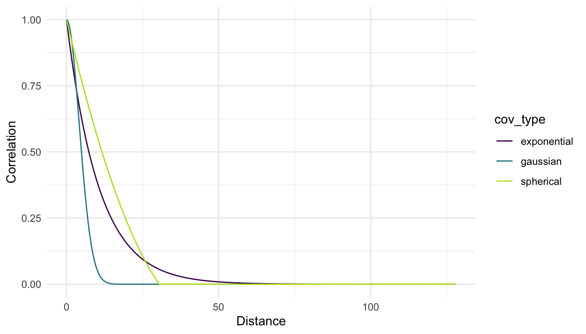
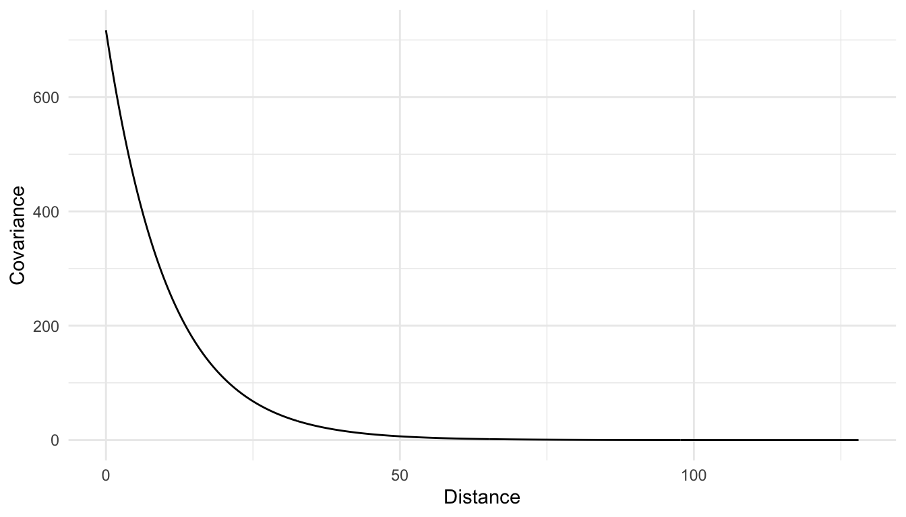
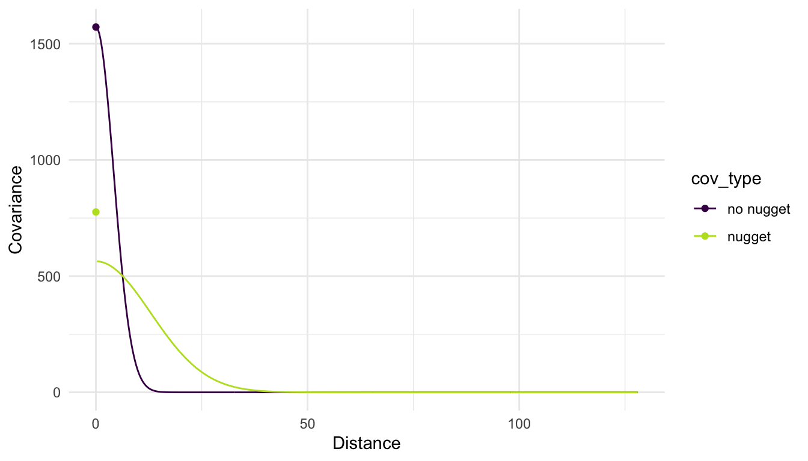
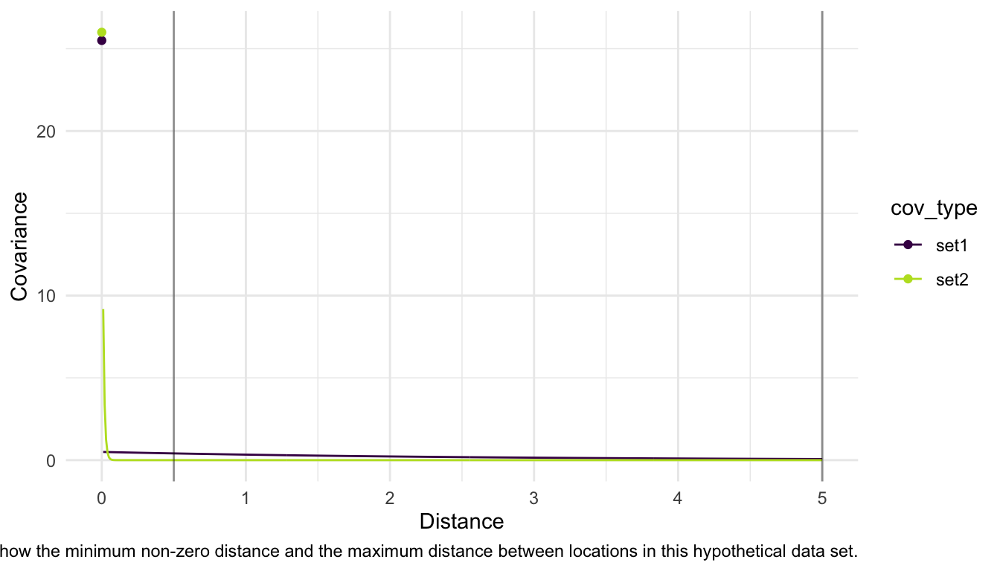
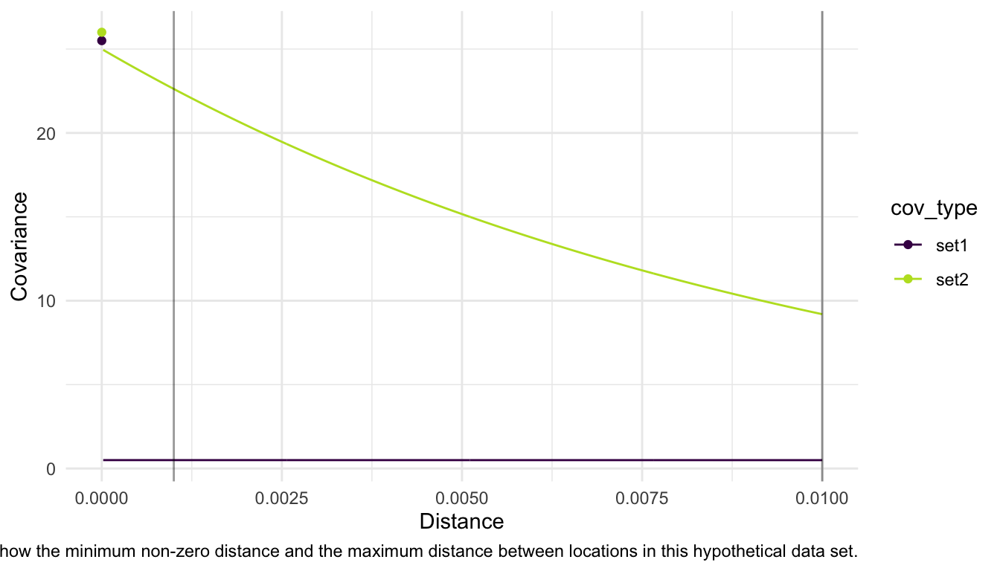

library(spmodel)
library(sf)
library(spData)
library(tidyverse)
theme_set(theme_minimal()) ## set the default theme2 Spatial Covariance and Correlation
Goals
- Identify a few common functions used to model spatial covariance.
- Explain the difference between spatial covariance and spatial correlation.
- Interpret the following spatial covariance parameters:
- partial sill.
- range.
- nugget.
We will use the spmodel, sf, spData, and tidyverse packages:
We now turn our attention to more formal modeling of spatial correlation. While the empirical variogram is a useful exploratory tool, we are often interested in constructing a statistical model that incorporates spatial correlation. Note that in this section, we focus almost entirely on understanding spatial correlation and covariance. The code we can use to provide estimates of spatial covariance parameters in practice is much more of a focus in Chapter 3.
2.1 Exploring the Baltimore Housing Data
Throughout this section, we use the baltimore data set from the spData package. This data set contains information on 211 house prices in the Baltimore area in the year 1978. While there are many variables collected on the 211 houses, we will focus only on the following 3 variables in this section:
PRICE, the price of the home, in thousands of dollars.X, the x-coordinate location of the home (with an unknown projection).Y, the y-coordinate location of the home (with an unknown projection).
Note that, because the projection is unknown, we do not know the exact units of distance between two homes in the data set. But, we do have the relative spatial coordinates of each home with unknown units.
Before we dive into modeling spatial covariance, we will first explore the baltimore data set using some plots from the previous section.
We can convert the baltimore data frame object to an sf object with the st_as_sf() function from the sf package:
baltimore_sf <- baltimore |> st_as_sf(coords = c("X","Y"), remove = FALSE)
baltimore_sf
## Simple feature collection with 211 features and 17 fields
## Geometry type: POINT
## Dimension: XY
## Bounding box: xmin: 860 ymin: 505.5 xmax: 987.5 ymax: 581
## CRS: NA
## First 10 features:
## STATION PRICE NROOM DWELL NBATH PATIO FIREPL AC BMENT NSTOR GAR AGE CITCOU
## 1 1 47.0 4 0 1.0 0 0 0 2 3 0 148 0
## 2 2 113.0 7 1 2.5 1 1 1 2 2 2 9 1
## 3 3 165.0 7 1 2.5 1 1 0 3 2 2 23 1
## 4 4 104.3 7 1 2.5 1 1 1 2 2 2 5 1
## 5 5 62.5 7 1 1.5 1 1 0 2 2 0 19 1
## 6 6 70.0 6 1 2.5 1 1 0 3 3 1 20 1
## 7 7 127.5 6 1 2.5 1 1 1 3 1 2 20 1
## 8 8 53.0 8 1 1.5 1 0 0 0 3 0 22 1
## 9 9 64.5 6 1 1.0 1 1 1 3 2 0 22 1
## 10 10 145.0 7 1 2.5 1 1 1 3 2 2 4 1
## LOTSZ SQFT X Y geometry
## 1 5.70 11.25 907 534 POINT (907 534)
## 2 279.51 28.92 922 574 POINT (922 574)
## 3 70.64 30.62 920 581 POINT (920 581)
## 4 174.63 26.12 923 578 POINT (923 578)
## 5 107.80 22.04 918 574 POINT (918 574)
## 6 139.64 39.42 900 577 POINT (900 577)
## 7 250.00 21.88 918 576 POINT (918 576)
## 8 100.00 36.72 907 576 POINT (907 576)
## 9 115.90 25.60 918 562 POINT (918 562)
## 10 365.07 44.12 897 576 POINT (897 576)The remove = FALSE argument says to keep the "X" and "Y" coordinate columns in the data frame, in addition to using them to create a new geometry column.
To explore the PRICE variable in the baltimore_sf data, we will make a plot of PRICE on the spatial coordinates, an empirical semivariogram of PRICE, and a basic histogram of PRICE:
## plot on spatial coordinates
ggplot(data = baltimore_sf, aes(colour = PRICE)) +
geom_sf() +
scale_colour_viridis_c() +
theme_void()
## empirical semivariogram
baltimore_esv <- esv(PRICE ~ 1, data = baltimore_sf)
ggplot(data = baltimore_esv, aes(x = dist, y = gamma, size = np)) +
geom_point() +
lims(y = c(0, NA)) 
## basic histogram
ggplot(data = baltimore_sf, aes(x = PRICE)) +
geom_histogram(colour = "black", fill = "white", bins = 15)
We can see a few things from our exploratory plots. First, from the first two plots, we see that there is spatial correlation in the housing PRICEs. For example, in the plot of PRICE on the x and y coordinates, houses in the northern region of the study area tend to priced higher while houses priced in the southern area of the study area tend to have lower prices. We also see an increasing pattern in the empirical semivariogram, further indicating that houses closer together in space tend to have more similar prices than houses that are further apart.
From the histogram of PRICE, we see that, while there is some right-skewness, the skewness is fairly mild. We also see that, while there are some outliers with somewhat high prices, these outliers are not too extreme. The units of PRICE are in hundreds of thousands of dollars: the house prices are so low because the data was collected in 1978!
After exploring our data set, we now want to more formally model the spatial correlation that we see in the plot with the spatial coordinates and the empirical semivariogram. To do so, we first need to define the terms random variable, spatial covariance, and spatial correlation.
2.2 Correlation and Covariance
Up until now, we have been using the term “spatial correlation” without actually explicitly defining the term. We have some intuition that there is spatial correlation if units that are closer together in proximity are more similar than units that are further apart. However, to explicitly model spatial correlation, we need to explicitly define the term.
First, we will introduce the concept of a random variable, which we are informally defining as a numeric variable whose possible values that can be expressed with some probability distribution. Random variables are often denoted with a capital letter \(Y\) or a capital letter \(X\).
As a non-spatial example, we can define the random variable \(Y\) as the number of Heads in \(n = 10\) flips of a fair coin. While \(Y\) itself is inherently random and never observed, we can obtain a single realization of \(Y\) by actually conducting the coin-flip experiment and observing the number of heads. Suppose that we do conduct this experiment, observing 4 Heads. The realization of the random variable \(Y\) is often denoted with a lower-case \(y\). In this example, \(y = 4\). If we repeat the coin flip experiment, possible values for \(y\) are \(y = 0, y = 1, \ldots y = 10\).
Moving from the coin-flip example to a spatial example with the Baltimore housing data set, we can imagine that the house prices at all 211 locations in the data set are generated from random variables, \(Y_1, Y_2, \ldots, Y_{211}\). We can think of our data as a single realization of these random variables, \(y_1 = 47.0, y_2 = 113.0, \ldots, y_{211} = 29.5\).
2.2.1 Introducing Spatial Correlation
So, why introduce random variables before we discuss spatial correlation. The reason is that when we think about spatial correlation in house prices, we always mean correlation between the random variables for house price, not the observed values (which, after they are observed, are fixed and no longer random). The definition of correlation between two random variables, \(Y_1\) with mean \(\mu_1\) and standard deviation \(\sigma_1\) and \(Y_2\) with mean \(\mu_2\) and standard deviation \(\sigma_2\) is:
\[ \text{corr}(Y_1, Y_2) = \frac{\text{E}[(Y_1 - \mu_1)(Y_2 - \mu_2)]}{\sigma_1 \sigma_2}, \tag{2.1}\]
where \(\text{E}((Y_1 - \mu_1)(Y_2 - \mu_2))\) denotes the expected value, or, the long-run average in the quantity \((Y_1 - \mu_1)(Y_2 - \mu_2)\). The correlation between two random variables is always between \(-1\) and \(1\), inclusive. If this formula is a lot to take in, do not worry about it too much: spatial correlation is commonly modeled with a particular spatial correlation function and we will rarely make use of the definition of correlation explicitly.
If the correlation between random variables \(Y_1\) and \(Y_2\) is positive, then, if were to theoretically obtain thousands of realizations of \(Y_1\) and \(Y_2\) and plot these thousands of realizations on a scatterplot (with the realizations of \(Y_2\) on the y-axis and the realizations of \(Y_1\) on the x-axis), then we would observe an increasing trend. In other words, the realizations of \(Y_1\) and \(Y_2\) would tend to be larger together and would tend to be smaller together. If the correlation between random variables \(Y_1\) and \(Y_2\) is negative, then, if were to theoretically obtain thousands of realizations of \(Y_1\) and \(Y_2\) and plot these thousands of realizations on a scatterplot, then we would observe a decreasing trend.
We have quickly glossed over a couple of things in the previous definition of correlation because, for introductory spatial models, we will not actually use the definition of correlation explicitly. Instead, for spatial models, we assume that the correlation between two random variables, \(Y_1\) and \(Y_2\), at spatial locations \(1\) and \(2\), can be modeled as a function of the spatial distance, denoted \(h_{12}\), between the locations where \(y_1\) and \(y_2\) are observed.
An example may help with an understanding of spatial correlation. A common spatial correlation function is the exponential function:
\[ \text{Corr}(Y_1, Y_2) = e^{\frac{-h_{12}}{\phi}}, \tag{2.2}\]
where \(\phi > 0\), commonly called the range parameter, controls the rate of decay in the correlation. A larger \(\phi\) value would indicate that the correlation decays slowly with distance while a smaller \(\phi\) value would indicate that the correlation decays quickly with distance.
There are a few things we should note about the exponential correlation function. First, if we use this correlation function, \(\text{Corr}(Y_1, Y_2)\) must be between 0 and 1. Unlike the general definition of correlation given in Equation 2.1 (where the correlation can be negative), many spatial correlation functions, including the exponential, only allow non-negative correlation in the random variables because negative correlation is rarely observed in real spatial data. In other words, it is rare for locations close together in space to be less similar than locations further apart.
Second, the idea of spatial correlation is a little abstract. In our baltimore house data, and, in most spatial applications, we only have one realization of our random variables. In other words, we only have one realization of the random variable \(Y_1\), which is \(y_1 = 47.0\); we only have one realization of the random variable \(Y_2\), which is \(y_2 = 113.0\), etc. Understanding the idea of spatial correlation requires that we think about a “what if” scenario: what if we were able to get millions of realizations of \(Y_1\) and \(Y_2\)? How would these realizations vary together?
Thinking again about our Baltimore housing example, we can estimate \(\phi\), the range parameter that controls how quickly spatial correlation decays with increased distance, and then determine the correlation between the random variables for house price at two spatial locations in the data set. We will talk more about how to estimate \(\phi\) later in this section, but, for now, suppose that we obtain an estimate of 10.6.
Consider the three spatial locations shown on the plot below. The distance between location 1 and location 2 is 42.72 units while the distance between location 2 and location 3 is 7.28 units.
baltimore_label <- baltimore_sf |> slice(1:3)
ggplot(data = baltimore_sf, aes(colour = PRICE)) +
geom_sf() +
scale_colour_viridis_c(end = 0.9) +
theme_void() +
ggrepel::geom_text_repel(data = baltimore_label, aes(x = X, y = Y, label = STATION)) +
geom_point(data = baltimore_label, aes(x = X, y = Y), size = 3, shape = 1)
If we use the exponential function to model spatial correlation, do you expect the estimated correlation between random variables for price to be larger for locations 1 and 2 or for locations 2 and 3?
We can calculate the estimated correlation explicitly using the estimated range parameter and the exponential correlation formula in Equation 2.2. The estimated correlation for locations 1 and 2 is \(e^{-42.72 / 10.6} = 0.0178\) while the estimated correlation for locations 2 and 3 is \(e^{-7.28 / 10.6} = 0.503\). This tells us that, according to our model, the correlation between the random variables for price at locations 1 and 2 is negligible: knowing the realized house price at location 2 tells us very little about what the realized house price will be at location 1. On the other hand, the correlation between the random variables for price at locations 2 and 3 is moderately strong: knowing the realized house price at location 2 tells us that there is a strong possibility that the realized house price at location 3 is similar to the realized price at location 2.
We can also make a plot of the correlation as a function of distance. The maximum distance between houses in the data set is 128 units.

From the correlation plot, we see that, as we would expect, as distance gets larger, the correlation decreases. We also see from the plot that the correlation approaches 0 at large distances but never reaches 0 exactly and never becomes negative.
There are many functions to choose from to model spatial correlation. We saw the formula for the exponential correlation function in Equation 2.2. Some other common spatial correlation functions include:
- the spherical correlation function:
\[ \text{Corr}(Y_1, Y_2) = \begin{cases} 1 - 1.5 \cdot \frac{h_{12}}{\phi} + 0.5 \cdot \left(\frac{h_{12}}{\phi}\right)^3, & h_{12} \leq \phi \\ 0, & \text{otherwise} \end{cases} \tag{2.3}\]
- the Gaussian correlation function:
\[ \text{Corr}(Y_1, Y_2) = e^{-\left(\frac{h_{12}}{\phi}\right)^2}. \tag{2.4}\]
- the triangular correlation function:
\[ \text{Corr}(Y_1, Y_2) = \begin{cases} \left(1 - \frac{h_{12}}{\phi}\right), & h_{12} \leq \phi \\ 0, & \text{otherwise} \end{cases} \tag{2.5}\]
A plot of the estimated exponential, spherical, and Gaussian correlation functions for the housing data is shown here.

Notice that all three correlation functions having decreasing correlation as distance increases and that all three are bound by \(0\) and \(1\). Note also that, while all three curves are somewhat similar, interpretating the nature of the spatial correlation in the house price data would change depending on which function is chosen. For example, for the Gaussian correlation, we would say that locations that are more than 12 or so units apart have no correlation in their prices. But, for the exponential and spherical correlation functions, we would still estimate there to be positive correlation at this distance. Which correlation function is best to use is a topic discussed more in Chapter 3.
2.2.2 Introducing Spatial Covariance
Closely tied to the concept of spatial correlation is the idea of spatial covariance. The spatial covariance between two random variables, \(Y_1\) and \(Y_2\), is simply equal to the numerator in Equation 2.1, or, rearranging Equation 2.1, is equal to:
\[ \text{cov}(Y_1, Y_2) = \sigma_1 \sigma_2 \text{corr}(Y_1, Y_2). \]
In many spatial models, we assume that the standard deviation (and therefore the variance) of \(Y_1\) and the standard deviation (and therefore the variance) of \(Y_2\) are equal (\(\sigma = \sigma_1 = \sigma_2\), an assumption discussed more in Section 2.4) so that
\[ \text{cov}(Y_1, Y_2) = \sigma_{de}^2 \text{corr}(Y_1, Y_2), \tag{2.6}\]
where \(\sigma_{de}^2\) is often called the partial sill, or dependent error variance, parameter. We can use the same spatial models for \(\text{corr}(Y_1, Y_2)\) that were described in the previous section. So, we really just have one extra parameter now: \(\sigma_{de}^2\), which scales the correlation so that the maximum now corresponds to \(\sigma_{de}^2\) instead of 1. For the housing data, if we were to estimate correlation of house prices in dollars and house prices in thousands of dollars with the same data, we would arrive at the same exact correlation function. However, the covariance would be larger if the prices were in dollars instead of in thousands of dollars.
Estimating \(\sigma_{de}^2\) (which is discussed more in Chapter 3) with an exponential correlation/covariance model gives a value of $_{de}^2 = $ 716.9. The estimated covariance between locations 1 and 2 is then \(716.9 \cdot e^{-42.72 / 10.6} = 12.76\) while the estimated covariance between locations 2 and 3 is \(716.9 \cdot e^{-7.28 / 10.6} = 360.6\).
A plot of the estimated covariance of house prices, as a function of distance, is shown below. Note that the general pattern of the covariance is identical to that of the correlation; however, the y-axis is now scaled up to the estimated overall variance of house prices (just over 700 thousands of dollars squared).

While the correlation between random variables is very commonly discussed in non-spatial random effects models and in time series models, the covariance is more commonly presented in spatial contexts.
Though the covariance can be modeled using Equation 2.6, more commonly, we introduce a third covariance parameter to model spatial covariance. This third covariance parameter is often called the nugget and inflates the covariance only when the distance \(h\) is equal to 0. Including the nugget often helps with model fit, so, unless there is a good reason not to, most spatial models include a nugget parameter.
The exponential covariance between random variables \(Y_i\) and \(Y_j\) at spatial locations separated by a distance \(h_{ij}\), including a nugget effect, is:
\[ \text{cov}(Y_i, Y_j) = \begin{cases} \sigma_{ie}^2 + \sigma_{de}^2 e^{\frac{-h_{ij}}{\phi}}, & h_{ij} = 0\\ \sigma_{de}^2 e^{\frac{-h_{ij}}{\phi}}, & h_{ij} > 0 \end{cases} \tag{2.7}\]
In the formula, \(\sigma^2_{ie}\) refers to the nugget, or independent error variance parameter while \(\sigma^2_{de}\) refers to the partial sill, or the dependent error variance parameter.
Important
Though we have built up to the spatial covariance function in Equation 2.7 slowly (by first introducing the range parameter, then the partial sill, and finally the nugget), it is Equation 2.7 with all three spatial covariance parameters that is most commonly used in spatial models (not Equation 2.2 or Equation 2.6).
The \(\text{cov}(Y_i, Y_j)\), with a nugget effect can be similarly defined for the other correlation functions (spherical, gaussian, triangular) by subbing in the appropriate correlation function in for \(e^{\frac{-h_{ij}}{\phi}}\).
Adding in a nugget parameter to the model for the covariance means that we can get different estimates for the partial sill and the range parameters. The plot below shows the fitted covariance using a gaussian correlation function both with a nugget effect and without a nugget effect for the housing price variable. Note in the plot below how the inclusion of a nugget effect results in a “jump” in covariance when the distance is equal to 0 while in the model without the nugget effect, no such “jump” is possible.

If there is no nugget effect in the model, then the correlation between \(Y_i\) and \(Y_j\) can be calculated as \(e^{-\left(\frac{h_{ij}}{\phi}\right)^2}\) for a gaussian correlation model. This is the formula we used when we introduced correlation at the beginning of the section.
However, if there is a nugget effect, then the overall variance is inflated, so that the correlation between \(Y_i\) and \(Y_j\), whose locations are separated by distance \(h_{ij}\), is:
\[ \text{Corr}(Y_i, Y_j) = \frac{\sigma_{de}^2e^{-\left(\frac{h_{ij}}{\phi}\right)^2}}{\sigma^2_{de} + \sigma^2_{ie}} \]
2.3 Interpreting Spatial Covariance Parameters
Loosely speaking, the three covariance parameters can be interpreted as:
- \(\sigma^2_{ie}\) is the amount of “independent” (non-spatial) error variability in the response.
- \(\sigma^2_{de}\) is the amount of “dependent” (spatial) error variability in the response.
- \(\phi\) controls the rate of decay in the spatial correlation so that larger values of \(\phi\) indicate that the correlation decays more slowly with distance.
However, in practice, simple interpretations of these three parameters on their own and without considering the units of distance in the data used to fit the model can lead to misguided statements. Consider, for example, the following sets of covariance parameters with an exponential correlation function for locations that have a minimum distance (non-zero) of 0.5 units and a maximum distance of 5 units:
Set 1: \(\sigma^2_{ie} = 25\), \(\sigma^2_{de} = 0.5\), \(\phi = 2.5\).
Set 2: \(\sigma^2_{ie} = 1\), \(\sigma^2_{de} = 25\), \(\phi = 0.01\).
It would be incorrect to conclude that, based on these parameters, there is a lot of spatial covariance in Set 2 (which has a very large proportion of the overall variance coming from \(\sigma^2_{de}\)) while very little spatial covariance in Set 1 (which has a very large proportion of the overall variance coming from \(\sigma^2_{ie}\). In fact, these models are very similar for the set of distances that are in our data.

Important
The moral of this toy example is that plotting the spatial covariance function on a range of distances observed in the data is the best way to understand the nature of the spatial correlation in the variable of interest.
Note that, for the same exact example, if our observed data was actually observed in a space such that the minimum distance between two locations is 0.001 units and the maximum distance between two locations is 0.01 units, the two models above are now quite different!

So, when interpreting spatial covariance parameters, we must keep the scale of distance in mind.
2.4 Stationarity
The models that we have used for spatial covariance thus far all have an assumption of second-order stationarity. A process that satisfies a second-order stationarity assumption has:
A constant mean (so, the mean does not shift from one location to another. In Chapter 3, we will allow the mean to change as a function of predictor variables, but we will make this stationarity assumption on the error terms in the model, which we will assume have a constant mean of 0).
Spatial covariance that depends only on the distance and direction between two locations.
Second-order stationarity is a very common assumption in the field of spatial statistics. We will assume our data are generated from a second-order stationary process throughout most of these materials.
Additionally, the models that we used above are isotropic models in that the spatial covariance depends only on the distance between two spatial locations (and not the direction). Models that relax this assumption are called anisotropic models and allow the covariance for two locations separated by a distance \(h_{ij}\) in the north-south direction to be different than the covariance for two locations separated by the same distance \(h_{ij}\) in the east-west direction.